1과목: 응용역학
1. 탄성계수 E= 2.1×106kg/cm2, 푸아송비 v=0.25 일 때 전단탄성계수의 값으로 옳은 것은?
2. 그림과 같이 폭(b)와 높이(h)가 모두 12cm인 2등변삼각형의 x, y축에 대한 단면상승모멘트 Ixy는?(오류 신고가 접수된 문제입니다. 반드시 정답과 해설을 확인하시기 바랍니다.)
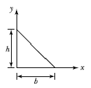
3. 보의 길이 가 L일 때 자유단의 처짐이 Δ라면, 처짐이 4Δ가 되려면 보의 길이 L은 약 몇 배가 되어야 하는가?
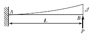
4. 단면적이 2cm × 2cm 인 정사각형 봉에 축방향력 2,000kgf가 작용할 때 수직선에 대하여 30° 경사진 단면에서의 수직응력(σθ)은?
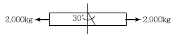
5. 전단력 V가 작용하고 있는 그림과 같은 보의 단면에서 τ1 - τ2의 값으로 옳은 것은?
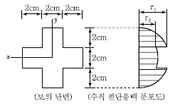
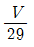
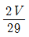
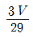
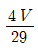
6. 바닥은 고정, 상단은 자유로운 기둥의 좌굴 형상이 그림과 같을 때 임계하중은 얼마인가?
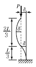
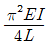
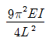
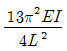
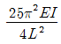
7. 다음 트러스에서 부재력 U의 값으로 옳은 것은?
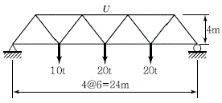
8. 그림과 같은 3활절 아치에서 D점에 연직하중 20t이 작용할 때 A점에 작용하는 수평반력 HA는?
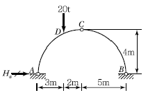
9. 그림과 같은 강봉이 2개의 다른 정사각형 단면적을 가지고 하중 P를 받고 있을 때 AB가 1,500kg/cm2의 수직응력(Normal Stress)을 가지면, BC에서의 수직응력(Normal Stress)은 얼마인가?
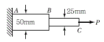
10. 그림과 같은 내민보에 대하여 지점 B에서의 처짐각을 구하면? (단, EI＝일정)
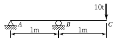
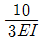
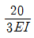
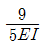
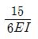
11. 휨강성이 EI인 프레임의 C점의 수직처짐 δc를 구하면?
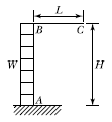
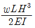
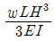
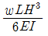
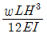
12. 같은 재료로 만들어진 반경 r인 속이 찬 축과 외반경 r이고 내 반경 0.6r인 속이 빈 축이 동일 크기의 비틀림 모멘트를 받고 있다. 최대 비틀림 응력의 비는?
13. 그림과 같이 단순보의 A점에 휨모멘트가 작용하고 있을 경우 A점에서의 전단력의 절댓값 크기는?
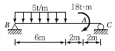
14. 그림과 같은 게르버보에서 하중 P만에 의한 C점의 처짐은? (단, 여기서 EI는 일정하고 EI=2.7×1011kg ∙ cm2이다.)
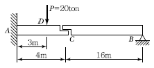
15. 부정정 구조물의 해석법에 대한 설명으로 옳지 않은 것은?
16. 그림과 같은 단순보에 하중이 우에서 좌로 이동 할 때 절대 최대 휨모멘트는 얼마인가?
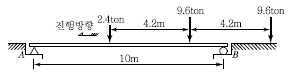
17. 다음 도형의 도심축에 관한 단면 2차 모멘트를 Ig, 밑변을 지나는 축에 관한 단면 2차 모멘트를 Ix라 하면 Ix/Ig값은?
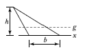
18. 다음 그림과 같은 직사각형 단면 기둥에서 e＝10cm인 편심하중이 작용할 경우 발생하는 최대 압축응력은? (단, 기중은 단주로 간주한다.)
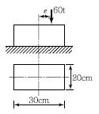
19. 아래 그림과 같은 1차 부정정보에서 B점으로부터 전단력이“0”이 되는 위치(X)의 값은?
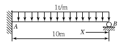
20. 그림과 같이 단순보에 하중 P가 경사지게 작용시 A점에서의 수직반력 VA를 구하면?
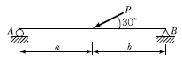
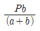
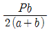
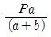
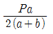
2과목: 측량학
21. A, B 간의 비고를 구하기 위해 (1), (2), (3)경로에 대하여 직접고저측량을 실시하여 다음과 같은 결과를 얻었다. A, B 간 고저차의 최확값은?
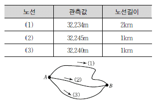
22. 건설공사에 필요한 지형도 제작에 주로 이용하는 방법과 거리가 먼 것은?
23. 원곡선에서 교각이 30°이고 곡선 반지름이 500m이며 곡선시점의 추가거리가 150m일 때, 곡선종점의 추가거리는?
24. 현재 GPS의 의사거리 결정에 영향을 주는 오차 와 거리가 먼 것은?
25. 도로의 곡선지점(B.C)의 위치가 중심말뚝 No.12+4.41m이고 곡선종점(E.C)의 위치가 중심말뚝 No.19+11.52m일 때에 시단현(δ1)과 종단현(δ2)에 대한 편각은? (단, 곡선반경＝100m, 중심말뚝의 간격＝20m)(오류 신고가 접수된 문제입니다. 반드시 정답과 해설을 확인하시기 바랍니다.)
26. 기준면으로부터 지반고(단위：m)를 관측한 결과가 그림과 같다. 정지고를 2.8m로 하기 위하여 필요한 토량은? (단, 각각의 직사각형 면적은 200m2이고, 토량의 변화는 무시한다.)(오류 신고가 접수된 문제입니다. 반드시 정답과 해설을 확인하시기 바랍니다.)
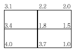
27. 평판의 도상에 허용되는 제도오차를 0.3mm라할 때, 1/1, 000의 축척에 의한 측량에서 도상점과 지상측점과의 중심맞추기 오차(편심 거리)의 최대 허용 범위는?
28. 수평각 관측을 실시할 때에 망원경을 정위와 반위의 상태로 관측하여 평균값을 취하여 제거할수 있는 오차는?
29. 단곡선 측설에서 교각 I＝90°, 반지름 R＝100m인 경우에 외할(E )은 몇 m인가?
30. 각관측 방법 중 배각법에 관한 설명으로 옳지 않은 것은? (여기서, α：시준오차, β：읽기오차, n：반복횟수)
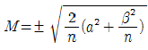
이다.31. A의 좌표가 (x＝3,120.26m, y＝4,216.32m)이고, B의 좌표가(x＝1,829.54m, y＝3,833.82m) 일 때
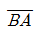
의 방향각은?32. 수위관측소를 설치하는 위치조건으로 옳지 않은 것은?
33. 항공사진의 특수 3점에 해당되지 않는 것은?
34. 중력이상의 주된 원인에 대한 설명으로 옳은 것은?
35. 토적곡선(Mass Curve)을 작성하는 목적으로 가장 거리가 먼 것은?
36. 사변형삼각망의 어느 관측각에 있어서 각 조건에 의해 조정한 결과 그 조정각이 30°00ʹ00ʺ였다. 변조건에 의한 조정계산을 위해 표차를 구할 경우, 이 조정각에 대한 표차는 약 얼마인가?
37. 다각측량의 각 관측값 오차배분에 대한 설명으로 옳지 않은 것은?
38. 레벨의 불완전 조정에 의하여 발생한 오차를 최소화하는 가장 좋은 방법은?
39. 도로의 곡선부에서 확폭량(Slack)을 구하는 식으로 옳은 것은? (단, R：차선 중심선의 반지름, L：차량 앞면에서 차량의 뒤축까지의 거리)
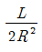
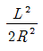
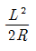
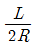
40. 항공사진 재촬영 요인의 판정기준에 대한 설명으로 틀린 것은?
3과목: 수리학 및 수문학
41. 직경 1mm인 모세관의 모관 상승 높이는? (단, 물의 표면장력은 74dyne/cm, 접촉각은 8°)
42. 직경 20cm의 관내 유속을 Chezy의 평균유속공식으로 구하려 할 때 유속계수 C는? (단, 마찰손실계수 f＝0.03)
43. 지름 200mm인 관로에 축소부 지름이 120mm인 벤투리미터(Venturimeter)가 부착되어 있다. 두 단면의 수두차가 1.0m, c＝0.98일 때의 유량은?
44. 지하수 흐름에서 Darcy 법칙에 관한 설명 중 옳은 것은?
45. 그림은 정수위투수계에 의한 투수계수 측정 모습이다. h＝100cm, L＝20cm, Q＝45cm3/sec이고 시료의 단면적 A=300cm2일 때 투수계수는?
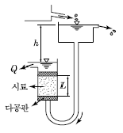
46. 비교적 평야지역에서 강우계의 관측 분포가 균일하고 500km2 정도의 작은 유역에 발생한 강우에 대한 적합한 유역 평균강우량 산정법은?
47. 그림과 같은 액주계에서 수은면의 차가 10cm이었다면 A, B점의 수압차는? (단, 수은의 비중＝13.6, 무게 1kg＝9.8N)
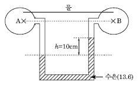
48. 다음 중 물의 순환과정에 대한 순서로 옳게 나열한 것은?
49. 얻어진 강우 기록으로부터 우량의 값, 유역면적 및 강우 계속시간 등의 관계를 규명하는 것은?
50. 그림과 같은 복단면(複斷面) 수로에 물이 흐를 때 윤변(潤邊)은?
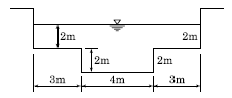
51. 단위유량도를 작성하고자 할 때 필요한 3가지 기본 가정이 아닌 것은?
52. k가 엄격히 말하면 월류수심 h등에 관한 함수이지만, 근사적으로 상수라 가정할 때에 직사각형 위어(Weir)의 유량 Q와 h의 일반적인 관계로 옳은 것은?
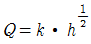
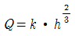
53. 유효강우량(Effective Rainfall)에 대한 설명으로 옳은 것은?
54. 유체의 흐름에 대한 설명으로 옳지 않은 것은?
55. 흐르는 물속에 물체가 놓여 있을 때, 물체의 형상에 기인하여 후방에 와(渦, Vortex) 등의 후류 발생영역이 나타나 작용하게 되는 힘을 일컫는 용어는?
56. 비에너지와 한계수심에 관한 설명으로 옳지 않은 것은?
57. 댐 여수로 설계시 중요한 사항으로 국부적인 저압부가 발생하여 여수로 표면에 심각한 손상을 발생시키는 현상을 무엇이라 하는가?
58. 길이 5m, 폭 2m인 4각형 단면 수조의 중간에 수직판을 설치하여 수조의 길이를 1：4로 나누어 막았다. 이때 수직판의 아래쪽에 단면적70cm2인 오리피스를 설치하여 물을 유출시킨다. 작은 수조의 수면이 큰 수조의 수면보다3.5m 높을 때부터 2개 수조의 수면차가 70cm가 될 때까지 소요되는 시간은? (단, 오리피스의유량계수는 0.61로 한다.)
59. 관수로 계산에서 l/D이 몇 이상이면 마찰손실이외의 소손실을 무시할 수 있는가? (단, D관의 지름, l：관의 길이)
60. 개수로에서 수면형(水面形)이 배수곡선으로 되는 수심 h의 범위를 나타내는 것은? (단, ho：등류수심, hc：한계수심, h：고려하는 임의의 수심)
4과목: 철근콘크리트 및 강구조
61. 단면 400mm×400mm인 중심축 하중을 받는 기둥(단주)에 4-D25(Ast＝2,027mm2)의 축방향 철근이 배근되어 있다. 이 기둥의 변형률이ε＝ 0.001에 도달하게 될 때, 축방향 하중의 크기는 약 얼마인가?(단, 콘크리트의 응력 fc=15MPa, fck＝24MPa, fy＝300MPa이다.)
62. 아래 그림과 같은 독립확대기초에서 1방향 전단에 대해 고려할 경우 위험단면의 계수전단력 (Vu)은? (단, 계수하중 Pu＝1,500kN이다.)
63. 콘크리트 구조물에서 비틀림에 대한 설계를 하려고 할 때, 계수비틀림모멘트를 계산하는 방법에 대한 다음 설명 중 잘못된 것은? (단, d는 유효깊이)
64. 정착구와 커플러의 위치에서 프리스트레싱 도입 직후 포스트텐션 긴장재의 응력은 얼마 이하로 하여야 하는가? (단, fpu는 긴장재의 설계기 준인장강도)
65. 다음 그림의 고장력 볼트 마찰이음에서 필요한 볼트 수는 최소 몇 개인가?(단, 볼트는 M22(φ＝22mm), F10T를 사용하며, 마찰이음의 허용력은 48kN이다.)
66. 단면이 400mm×500mm인 직사각형이고, 길이가 6m인 철근콘크리트 부재가 있다. 철근은 단면 도심에 대하여 대칭으로 배치하였으며, 단면적은 As＝2,000mm2이다. 콘크리트의 건조 수축으로 인한 콘크리트의 수축응력은? (단, 콘크리트의 건조 수축률은 0.00015이고, 콘크리트 및 철근의 탄성계수는 각각 Ec＝2.85×104MPa, Es＝2.0×105MPa이며, 이 부재의 변형은 구속되어 있지 않다.)
67. 철근콘크리트 부재에서 전단철근이 부담해야 할 전단력이 400kN일 때 부재축에 직각으로 배치된 전단철근의 최대간격은? (단, Av＝700mm2, fyt＝350MPa, fck＝21MPa, bw＝400mm, d＝560mm)
68. 깊은 보(Deep Beam)의 강도는 다음 중 무엇에 의해 지배되는가?
69. 강도 설계에 있어서 안전율을 위한 강도 감소계수 φ 의 값으로 틀린 것은?
70. bw ＝200mm, Vd＝500mm, As＝1,000mm2인단철근 직사각형보를 강도설계법으로 해석할때 압축연단에서 중립축까지의 거리(c)는? (단, fck＝35MPa, fy＝300MPa이다.)
71. 보통중량콘크리트 설계기준강도(fck)가 35MPa이며 철근의 계항복강도가 400MPa이면 직경이 25mm인 압축이형철근의 기본정착길이 (Idb)는 얼마인가?
72. 그림과 같은 용접 이음에서 이음부의 응력은 얼마인가?
73. PSC 보를 RC 보처럼 생각하여, 콘크리트는 압축력을 받고 긴장재는 인장력을 받게 하여 두 힘의 우력 모멘트로 외력에 의한 휨모멘트에 저항 시킨다는 생각은 다음 중 어느 개념과 같은가?
74. 아래 그림과 같은 PSC보에 활하중(WL) 18kN/m이 작용하고 있을 때 보의 중앙단면 상연에서 콘크리트 응력은?(단, 프리스트레스 힘(P)은 3,375kN이고, 콘크리트의 단위중량은 25kN/m3을 적용하여 자중을 산정하며, 하중계수와 하중조합은 고려하지 않는다.)
75. 그림과 같은 임의 단면에서 등가 직사각형 응력분포가 빗금친 부분으로 나타났다면 철근량 As는 얼마인가? (단, fck＝21MPa, fy＝400MPa)
76. 그림과 같이 설계된 복철근 직사각형 보의 경우 공칭 휨모멘트 강도 Mn은? (단, fck＝28MPa, fy＝350MPa, As＝4,500mm2, Asʹ＝1,800mm2이며, 압축·인장 철근 모두 항복한다고 가정)
77. 철근의 이음방법에 대한 설명 중 옳지 않은 것은? (단, Id는 정착길이)
78. 옹벽의 설계 및 해석에 대한 설명으로 틀린 것은?
79. 다음 중 전단철근으로 사용할 수 없는 것은?
80. 아래 그림과 같은 보통 중량 콘크리트 직사각형 단면의 보에서 균열모멘트(Mcr)는?(단, fck＝24MPa이다.)
5과목: 토질 및 기초
81. 그림과 같은 20×30m 전면기초인 부분보상기초(Partialfy Compensated Foundation)의 지지력 파괴에 대한 안전율은?
82. 내부마찰각이 30°, 단위중량이 1.8t/m3인 흙의 인장균열 깊이가 3m일 때 점착력은?
83. 그림과 같은 점성토 지반의 토질실험 결과 내부마찰각 φ＝30°, 점착력 c＝1.5t/m2일 때 A점의 전단강도는?
84. 다음의 연약지반 개량공법 중 지하수위를 저하 시킬 목적으로 사용되는 공법은?
85. 다음 그림에서 액성지수(LI)가 0 ＜ LI ＜ 1인 구간은? (단, V：흙의 부피, W：함수비(%))
86. 그림과 같은 사면에서 활동에 대한 안전율은?
87. 연약지반에 흙댐을 축조할 때에 어느 위치에서 공극수압의 변화를 측정하였다. 흙댐을 축조한 직후의 공극수압이 10t/m2이었고 5년 후에 2t/m2이었을 때 이 측점의 압밀도는?
88. 성토된 하중에 의해 서서히 압밀이 되고 파괴도 완만하게 일어난 간극수압이 발생되지 않거나 측정이 곤란한 경우 실시하는 시험은?
89. 다음의 연약지반 개량공법 중에서 점성토지반에 쓰이는 공법은?
90. 현장다짐을 실시한 후 들밀도시험을 수행하였다. 파낸 흙의 체적과 무게가 각각 365.0cm3, 745g이었으며, 함수비는 12.5%였다. 흙의 비중이 2.65이며, 실내표준다짐 시 최대 건조단위중량이 rdmax＝1.90t/m3일 때 상대다짐도는?
91. 유선망을 작성하여 침투수량을 결정할 때 유선망의 정밀도가 침투수량에 큰 영향을 끼치지 않는 이유는?
92. 그림에서 흙의 단면적이 40cm2이고 투수계수가 0.1cm/sec일 때 흙속을 통과하는 유량은?
93. Paper Drain 설계 시 Drain Paper의 폭이 10cm, 두께가 0.3cm일 때 Drain Paper의 등치환 산원의 직경이 얼마이면 Sand Drain과 동등한 값으로 볼 수 있는가? (단, 형상계수：0.75)
94. 흙의 다짐에 관한 사항 중 옳지 않은 것은?
95. 표준관입시험에 관한 설명 중 옳지 않은 것은?
96. Mohr의 응력원에 대한 설명 중 틀린 것은?
97. 함수비 15%인 흙 2,300g이 있다. 이 흙의 함수비를 25%로 증가시키려면 얼마의 물을 가해야 하는가?
98. 부마찰력에 대한 설명으로 틀린 것은?
99. 모래나 점토같은 입상재료(粒狀材料)를 전단하면 Dilatancy 현상이 발생하며 이는 공극수압과 밀접한 관계가 있다. 다음에 설명한 이들의 관계 중 옳지 않은 것은?
100. 어떤 모래의 비중이 2.64이고, 간극비가 0.75일때 이 모래의 한계동수경사는?
6과목: 상하수도공학
101. 어떤 도시에서 강우강도 유역면적 1.5km2, 유입시간 7분, 유출계수 C＝0.7, 하수관 내의 평균유속이 1m/sec인 경우, 길이 500m인 하수관에서 흘러나오는 우수량은 몇 m3/sec인가? (단, 합리식으로 구하고, t의 단위는 분이다.)
102. 부영양화에 대한 설명으로 옳지 않은 것은?
103. 펌프 선정 시의 고려사항으로 가장 거리가 먼 것은?
104. 완속여과와 급속여과를 비교하여 설명한 것으로 옳지 않은 것은?
1⑤. 하수처리시설의 펌프장시설에 설치되는 침사지에 대한 설명 중 틀린 것은?
106. 하수도 맨홀 설치시 관경별 최대 간격에 차이가 있다. 관거 직선부에서 관경 600mm 초과 1,000mm이하에서 맨홀의 최대 간격은?
107. 계획오수량에 대한 설명 중 옳지 않은 것은?
108. 1일 800,000m3의 수돗물을 송수하기 위하여 내경 2,000mm의 주철관 1000m를 설치할 경우, 적당한 관로의 경사는? (단, Darcy-Weisbach 에 의하고 마찰손실계수 f＝0.03)
109. 유량이 5,000m3/day이고 BOD가 150mg/L인 하수를 500m3의 유효용량을 가진 폭기조에서 처리할 경우, BOD 용적부하량은?
110. 호소ㆍ댐을 수원으로 하는 경우의 취수시설로 적당하지 않은 것은?
111. 배수지의 유효수심은 얼마를 표준으로 하는가?
112. 하수 배제방식의 특징에 관한 설명으로 틀린 것은?
113. 물의 맛, 냄새를 제거하기 위하여 주로 활용되지 않는 처리공정은?
114. 수원지에서부터 각 가정까지의 상수계통도를 나타낸 것으로 옳은 것은?
115. 활성슬러지법에서 MLSS가 의미하는 것은?
116. 우수조정지의 설치장소로 적당하지 않은 곳은?
117. 미생물을 이용하여 하수처리를 실시할 때 유기물 분해속도가 가장 빠른 미생물의 성장단계는?
118. 정수시설 중 배출수처리시설의 농축조에서 고형물부하는 몇 kg/(m2·day)를 표준으로 하는가?
119. 관거의 종류 및 토질 등에 따른 과거의 기초공 중 철근콘크리트관을 극연약토 지반에 설치할때 가장 알맞은 기초는?
120. 상수도는 생활기반시설로서 영속성과 중요성을 가지고 있으므로 안정적이고 효율적으로 운영되어야 하며, 가능한 한 장기간으로 설정하는 것이 기본이다. 보통 상수도의 기본계획시 계획 (목표)연도는 계획수립 시부터 몇 년을 표준으로 하는가?